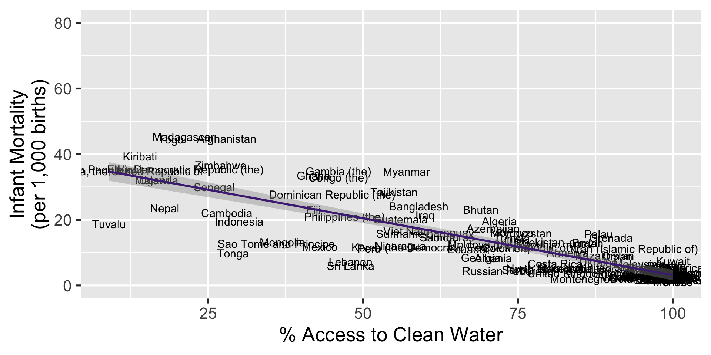
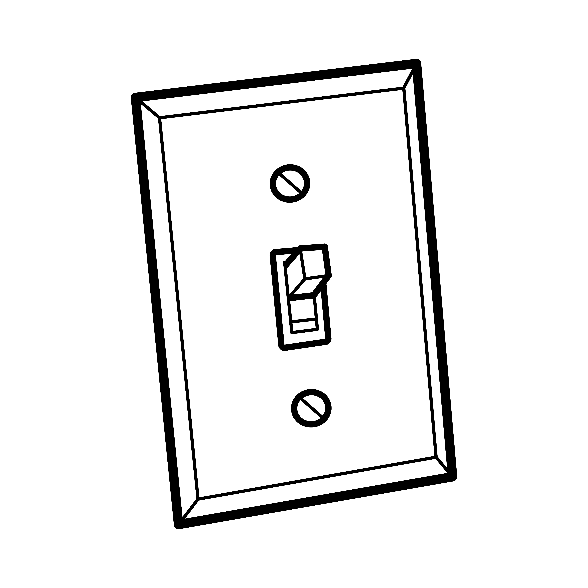

| Case | $X_1$ | $X_2$ | $Y$ |
|---|---|---|---|
| 1 | + | + | + |
| 2 | - | + | - |
Small N
POLI SCI 210
Introduction to Empirical Methods in Political Science
So far
Course mostly about statistical and causal inference
This week: Small N or qualitative methods
Tuesday: Reservations with large N + logic of causation
Thursday: Case selection + techniques
Questions
What have you learned so far?
Any reservations with the methods we have discussed?
Back to regression: QoG 2024

Fit regression
More questions
Can we claim access to clean water reduces infant mortality?
What do we need to believe?
Random assignment? Conditional independence? Quasi-experiment?
Critique 1: Correlation does not imply causation
We need more knowledge to make causal claims
Remove Turkmenistan

Remove Turkmenistan

Remove high infant mortality

Remove high infant mortality
More more questions
Let’s say you believe this relationship is causal
How is it that one thing causes the other?
Direction of causality?
Is this true everywhere?
Are we comparing apples and apples or apples and oranges and pick-up trucks?
Critique 2: Large N findings are what happens on average
Averages are sensitive to sample composition
Another way to think about it

Another way to think about it
Another way to think about it
Causal statements
Before:
- Access to clean water and infant mortality are negatively correlated
Now:
High access to clean water is sufficient for low infant mortality
Low access to water is necessary for high infant mortality
Logic of causation
Large N: Effect of causes
“What is the relationship between X and Y?”
Focus on averages, associations
Quantify uncertainty
Impose assumptions for causal interpretation
Logic of causation
Small N: Causes of effect
“Why does Y happen?”
Equifinality: Multiple paths to the same outcome
Focus on causal mechanisms
Equifinality
Example: Paths to high economic growth
- Democracy AND industrialization AND rule of law
OR
- Democracy OR Autocracy AND natural resources
Multiple paths also imply combinations of causes
Multiple causation
INUS: Insufficient but Necessary part of an Unnecessary but Sufficient set of conditions for the outcome
Example: Unprotected intercourse is insufficient for HIV transmission, but it can be a necessary part in one of the ways in which HIV is transmitted
Multiple causation
SUIN: Sufficient but Unnecessary part of a condition set that is Insufficient but Necessary for the outcome
Example: Electoral fraud is a sufficient condition for democratic erosion, which in turn is a neccessary condition for war
Causal mechanism
A process that explains how an outcome occurs.
Explaining how or why cause and effect are related entails identifying a causal mechanism
Large N relies on data set observations (DSOs) that do not say much about the mechanism
Small N focuses on causal process observations (CPOs) that help us establish causation more directly
Causal Process Observation
An insight or piece of data that provides information about context, process, or mechanism, and that contributes distinctive leverage in causal inference.
Wait a minute
Causal Process Observation
An insight or piece of data that provides information about context, process, or mechanism, and that contributes distinctive leverage in causal inference.
CPOs are not a real thing!
Neither are the assumptions we make in Large N!
We make assumptions not because they are true, but because they are useful
Case selection
We only need to look at a few cases to identify key CPOs
But how do we choose?
How not to do it

How to do it?
Next time
Small N
POLI SCI 210
Introduction to Empirical Methods in Political Science
Last time
Today: Case selection
Large N: Random sampling
Does it work here?
Asymptotic properties will not kick in with a few cases
Randomly chosen cases will not be representative
Need to sample intentionally!
Case selection methods
Most similar
Most different
Extreme cases
Deviant case
Diverse cases
Influential cases
Most similar
Needs at least two cases
Similar in every variable except for key explanatory and outcome variable
Example: Economic development in South Korea and North Korea since the war
Most different
| Case | $X_1$ | $X_2$ | $Y$ |
|---|---|---|---|
| 1 | + | + | + |
| 2 | + | - | + |
Cases differ on everything except for key explanatory and outcome variable
Example: Japan and Australia driving on the left
Typical case
Common or representative case that a theory explains
Representative by definition
Example: France, Russia, China as typical cases of social revolutions
Used to confirm causal mechanism proposed by the theory
Trap: Usually, you don’t want to look at a typical case only
Typical cases are “on the line”

Extreme case
Extreme value on explanatory OR outcome variable
Far away from the “mean”
Valuable because it is rare in one dimension
Example: Qatar and Saudi Arabia as cases of extreme autocracy (Polity score of -10)
Deviant case
Surprising value on some variable
Poorly explained by the theory
Used to explore potential alternative explanations
Once explained, not deviant anymore
Example: Norway as an oil-state that is not an autocracy
Diverse cases
Choose cases to maximize variance along relevant dimensions
At least two cases
Represent full range of values characterizing X and Y
Example: Colonial heritage influences economic development. Look at French, Spanish, British colonies
Influential case
Concern: results may be driven by one or a few cases
Choose a case to check the assumptions behind proposed causal mechanism
Example: Relationship between mass education and democratization influenced by countries who expanded education before becoming democracies
Practice

Moving on
Now we know how to select cases for small N analysis
But what do we do with these cases?
Or, what if we can only conduct within-case analysis?
Qualitative methods
Ordered by increasing level of immersion
Process tracing
Interviews
Focus groups
Participant observation
Ethnography
Process-tracing
Usually based on archival research
Extensive analysis of primary or secondary sources
Primary: Original document or first-hand account
Secondary: Summaries, critiques, opinions, analyses of those who did not participate or witness directly
Find pieces of evidence that assist on establishing causality
Process tracing tests
Interviews
Structured: Stick to script. Easy to compare across subjects
Semi-structured: Start with guide, allow for deviations. Somewhat comparable
Unstructured: Let people say whatever they want. Harder to compare and more time consuming to analyze
Key informants more important than a representative sample
Random sampling?

Non-random sampling?

Places to start:
Key informants
Send out call on relevant platform
Snowball sampling
Focus groups
Essentially an interview with multiple people in a controlled space
Interactions in group discussion provide data
Researcher acts as facilitator
Why focus groups?
Participant observation
Researcher acts as an observer for an extended period of time
Unlike focus groups, observe subjects in their natural habitat
Must determine level of involvement and whether to reveal identity
Types of participant observation
| Identity | ||
|---|---|---|
| Involvement | Overt | Covert |
| Passive | City hall meeting | Public space, hidden camera |
| Active | Visiting rural areas | Community center |
Ethnography
Deep immersion in a culture or community
Combination of interviews, focus groups, participant observation
Thick description: Produce vast amount of data (notes) to capture the complexity of behavior and its context
Example
Positionality
A person’s social location and how it shapes their perspective
Affects researcher’s relationship with and access to participants
Large N: Same protocol, same results
Small N: Same protocol, different results
Can be an advantage and a disadvantage
Summary
Only one week on qualitative methods
Cause of effects vs. effects of causes
Inference: Necessary and sufficient vs. correlational
Case-selection: Avoid convenience traps!
Techniques: Many available, often combined, but positionality matters